UK GDP Growth Since 1949: What the Charts Show
A look at annual growth, the level of GDP and what step-change analysis can tell us.
Revised article: This page reviews and replaces the original analysis, using a corrected compounded index and updated chart outputs.
The supplied figures show a UK economy that grew substantially over the long run, but more slowly in 2010–2019 than in 1998–2007. This is not a static economy. Whether growth improved people’s lives—and which changes caused the slowdown—requires other evidence.
Two measures, two questions
Annual growth asks how GDP changed from one year to the next. A GDP level index shows how the accumulated level compares with a base year. Both matter: a growing level can coexist with periods of weak or negative annual growth.
The following charts use 77 annual observations from 1949 to 2025. They show the supplied historical series, not a forecast or an assessment of GDP per person.
Is GDP growing, slowing or static? In this dataset the level rises from 100 in 1949 to about 600 in 2025, despite setbacks. Growth was slower in the later comparison: the compounded annual rate was about 2.8% in 1998–2007 and 2.0% in 2010–2019. These are descriptive period averages, not evidence that a particular policy caused the difference. The latter period starts after the 2009 downturn, so the comparison is affected by the choice of dates and economic cycle.
Annual GDP growth: fluctuations and signals
Growth rates vary from year to year. The run chart highlights six consecutive observations below the whole-series median around 2008–2013; the 2020 contraction is also visible. A run is a prompt for investigation, not proof of a permanent shift.
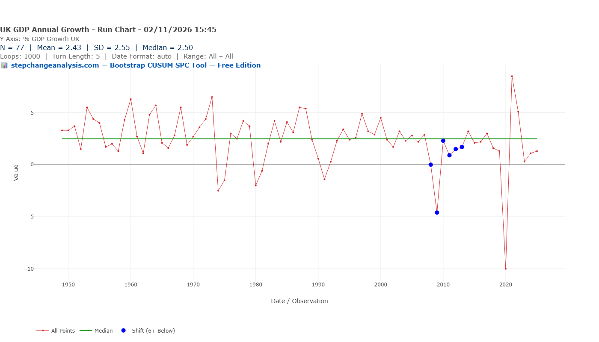
For the same growth figures, the StepChange Analyzer reports one fitted stage, with a mean of 2.43%, using 99.7% confidence, 1,000 loops and turn length 5. In plain English: this run did not identify a sustained step change in the mean under those settings. It does not establish that growth was unchanged, or that the financial crisis had no lasting effect.
Why might a real change not be detected? It might be small compared with year-to-year swings, develop gradually rather than as a step, or be obscured by large events such as recessions. The time period and the chosen settings also affect what the method can identify. Results can change with the question, data or method; record the choices and compare with other evidence, rather than adjusting settings just to obtain a preferred answer.
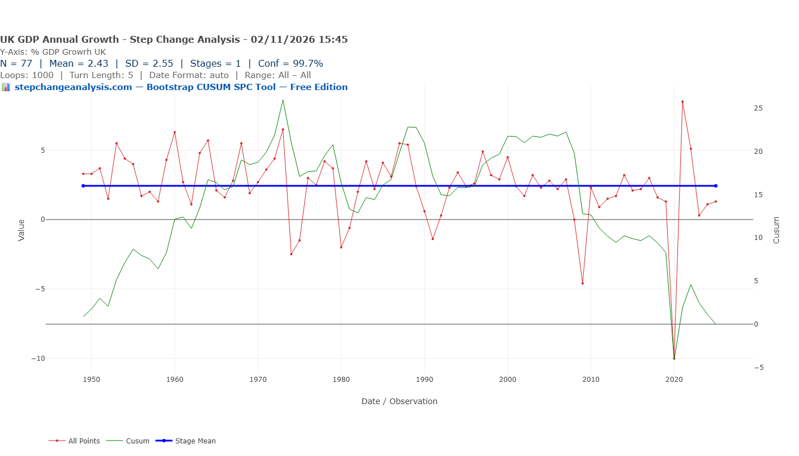
The GDP level: a compounded index
Starting at 100 in 1949, the index compounds each following year’s supplied growth rate. It reaches approximately 600.1 in 2025, with falls as well as increases along the way. The input rates are rounded, so this reconstruction may differ from an official index calculated directly from GDP levels.
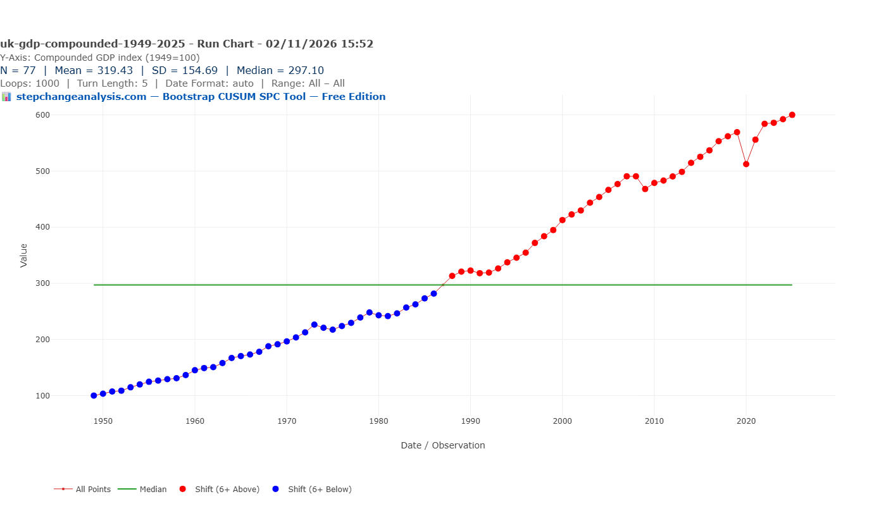
The long runs either side of the overall median are unsurprising for a series that rises over time. They should not be read as a single abrupt change in 1987.
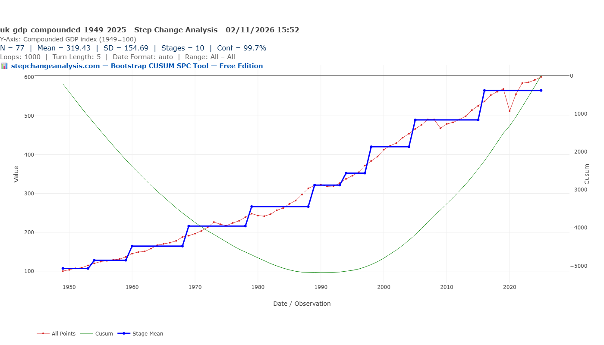
The step-change output fits ten stages to this index. Because the series trends upward and adjacent observations are linked by compounding, a staircase can approximate a gradual rise. The boundaries are places to investigate—not proof that ten abrupt economic regimes occurred. The green CUSUM is calculated relative to the whole-series mean; it is not an independent measurement of the economy’s growth trend.
The ten fitted stages
These are the analyser’s fitted index means. The change column compares each mean with the previous stage mean; it is not an annual growth rate. Stage lengths differ, so the percentages are not directly comparable rates of economic growth.
| Stage | Years | Mean index | Change in mean |
|---|---|---|---|
| 1 | 1949–1953 | 106.77 | Baseline |
| 2 | 1954–1959 | 127.92 | +19.8% |
| 3 | 1960–1968 | 164.31 | +28.4% |
| 4 | 1969–1978 | 216.08 | +31.5% |
| 5 | 1979–1988 | 266.30 | +23.2% |
| 6 | 1989–1993 | 321.33 | +20.7% |
| 7 | 1994–1997 | 352.36 | +9.7% |
| 8 | 1998–2004 | 420.17 | +19.2% |
| 9 | 2005–2015 | 489.36 | +16.5% |
| 10 | 2016–2025 | 565.19 | +15.5% |
The full stage summary PDF includes the reported standard deviations and confidence values. The fit uses a 99.7% setting, 1,000 bootstrap loops and turn length 5. Those settings and the reported percentages do not establish a causal explanation for a boundary.
Did structural changes make a difference?
A Level 3-type change addresses conditions that shape how a system works, rather than just dealing with an immediate result. Level 3 is this site’s extension of Joiner’s levels of fix. It is an analogy for these national changes, not a claim that Joiner classified them. Effects may take years, and reforms often overlap.
- Competition reform in 1956: The Restrictive Trade Practices Act challenged price-fixing agreements. A study comparing UK manufacturing industries found evidence that increased competition raised productivity growth in affected industries. That is evidence for a structural mechanism at industry level—not a measurement of its precise effect on total GDP.
- 1980s reforms and later changes in trade and technology: Privatisation, changes in regulation and taxation, European market integration and information technology could alter investment and competition over time. The House of Lords Library describes competing views about their long-run impact; the GDP charts here cannot separate those effects or establish a single cause.
- The financial crisis and its aftermath: The downturn is visible, but the more persistent question is productivity. The ONS’s improved 2026 estimates still show slower growth in output per hour after the crisis: about 2.0% a year before 2008 versus 1.3% in 2009–2019. This supports a lasting slowdown, though its timing and causes remain debated; it does not prove the crisis alone caused it.
- Brexit and COVID: COVID produced a sharp fall and recovery. Changes to UK–EU trading arrangements may work through trade and productivity with a delay. The OBR’s 2024 assessment estimates a lower long-run potential productivity level relative to remaining in the EU; that is a modelled counterfactual, not a directly observed change in this chart. It is difficult to disentangle overlapping shocks.
How to test a proposed structural effect: state the expected mechanism and delay, then examine GDP per person and output per hour, relevant sectors and comparable countries over time. Check what changed in implementation, alternative explanations and data revisions. A fitted boundary in the level index is a starting question, not the answer.
Has life in the UK improved?
GDP measures production, not the whole of life. More total output can result partly from more people; even GDP per person is an average and does not show how gains are shared. A more useful set of measures depends on the question, but could include:
- Material living standards: real median household disposable income, housing costs and poverty, alongside GDP per person.
- Health and experience: healthy life expectancy, mental health and people’s reported life satisfaction.
- Fairness and opportunity: income distribution, education and differences between places and groups.
- Future conditions: the environment, emissions and the resources or risks passed to future generations.
These measures can move in different directions. For example, the ONS reported that UK healthy life expectancy had fallen compared with earlier periods; rising aggregate GDP alone cannot settle whether life improved overall. The ONS national well-being dashboard brings together economic, social and environmental measures.
The Chandler Good Government Index adds a useful government capability and effectiveness perspective. Its seven pillars include institutions and financial stewardship as well as “Helping People Rise” outcomes. It complements, rather than replaces, direct measures of citizens’ lives. An overall score and country ranking depend on indicator choices and weights; a higher rank does not by itself prove that a particular policy caused better outcomes.
Apply the Three Rights
- Right Problem: specify whose life or opportunity needs to improve, and where.
- Right Intervention: explain the proposed system change, how it could help and when effects might appear.
- Right Measures: track outcomes for people, implementation and possible harms—not GDP alone.
Explore the complete framework in Why Improvement Programmes Fail and see choosing a chart when examining change over time.
Check the data and try it yourself
- Download the annual growth and compounded index CSV. The base year is 1949 = 100; the 1949 growth figure is retained but not applied to the base.
- Open the StepChange Analyzer, choose Year Starting as the date and either % GDP Growrh UK (the original column name) or Compounded GDP index (1949=100) as the value.
- Compare the plots and record the settings. Check source definitions and revisions; for a direct official GDP-level series see ONS GDP, chained volume measures.
Data and earlier analysis
The original article referred to World Bank and ONS data, but the exact source edition of these supplied annual figures has not been independently verified. The CSV retains those figures; the compounded index is calculated from them, rather than copied from an official level series. For current figures use the ONS series or World Bank annual growth data and check their definitions and release dates.
Correction: the former “Cumulative” column added the previous year’s growth rate instead of compounding the current year’s rate. The earlier cumulative plots therefore did not show a GDP level index. The original supplied CSV is available for transparency.
Earlier charts and stage table — historical reference
The first three charts show the earlier annual-growth outputs. The remaining five and the table use the former additive, one-year-lagged column; they are not a compounded GDP index. These historical results have been superseded by the charts above and should not be interpreted as economic growth regimes.
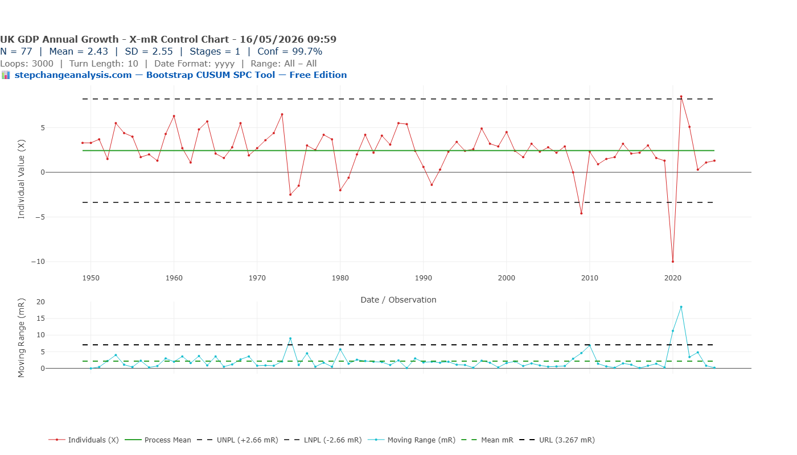
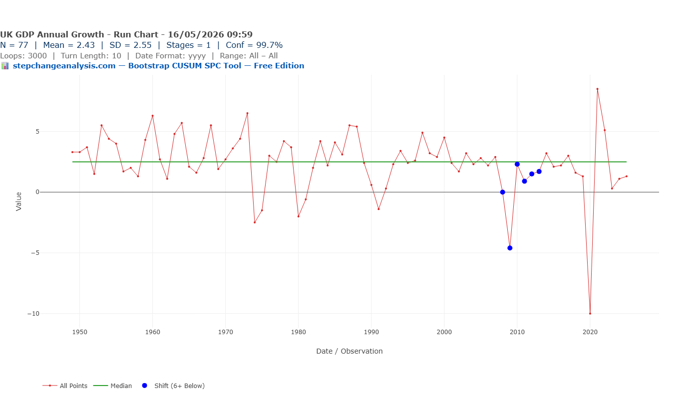
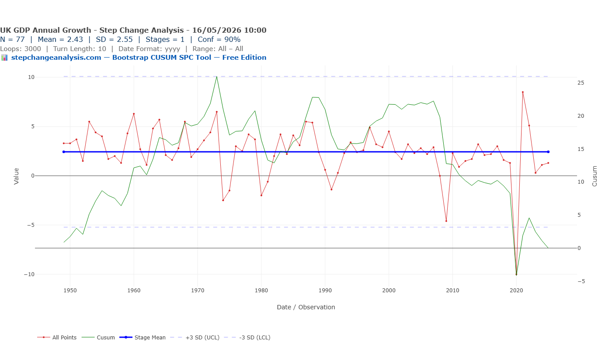
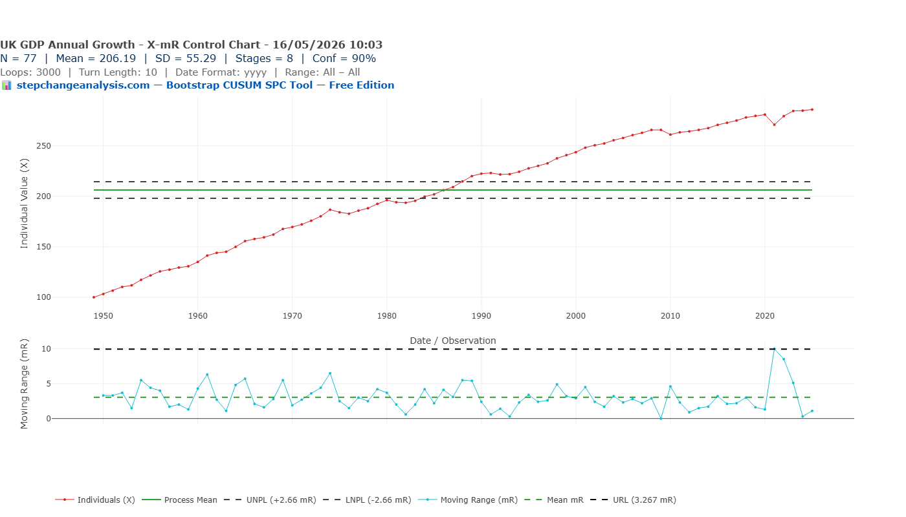
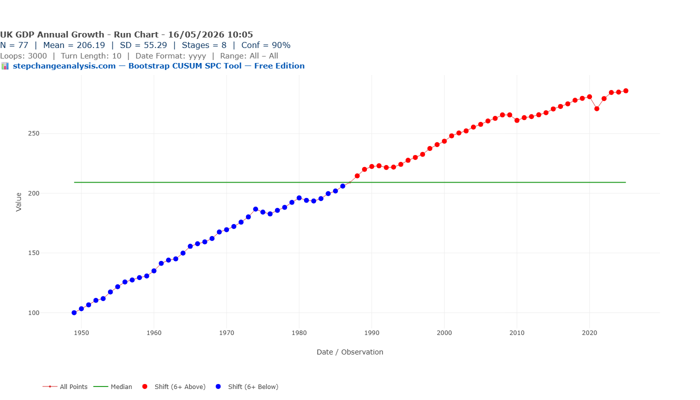
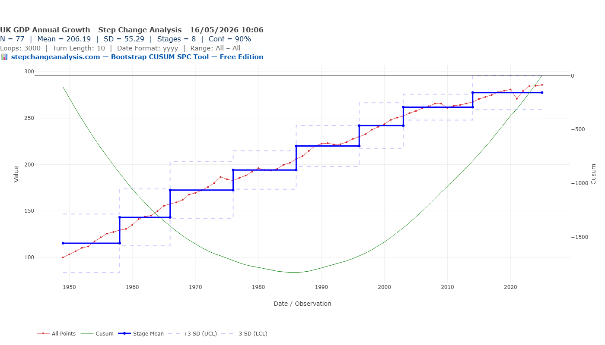
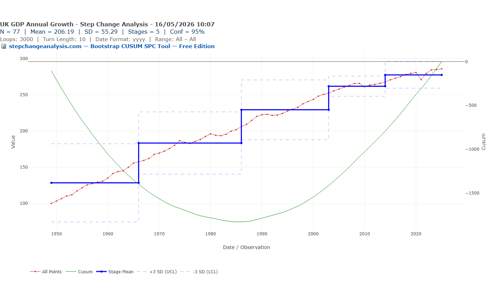
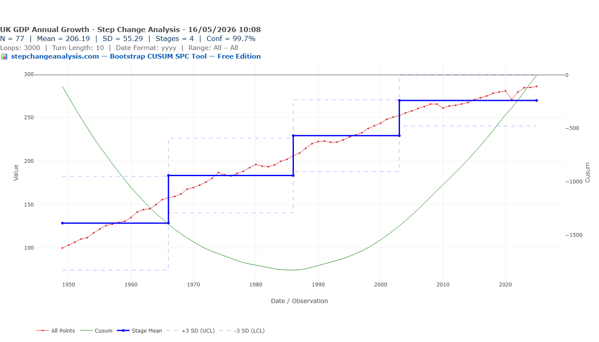
Former 90% stage table
Original reported period labels overlap at boundaries; changes compare fitted means, not annual growth.
| Stage | Reported period | Mean | Change in mean |
|---|---|---|---|
| 1 | 1949–1958 | 115.35 | Baseline |
| 2 | 1958–1966 | 143.19 | +24.1% |
| 3 | 1966–1976 | 172.55 | +20.5% |
| 4 | 1976–1986 | 194.16 | +12.5% |
| 5 | 1986–1996 | 220.04 | +13.3% |
| 6 | 1996–2003 | 241.90 | +9.9% |
| 7 | 2003–2014 | 261.77 | +8.2% |
| 8 | 2014–2025 | 277.40 | +6.0% |
The earlier executive summary PDF has not been updated and contains superseded interpretations; it should not be used as the current summary.